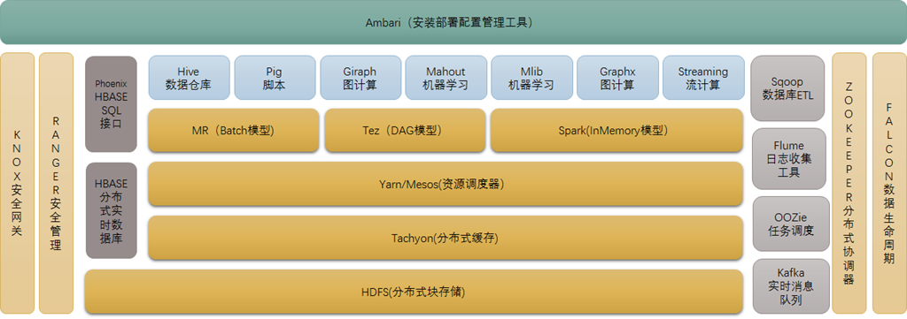

Hadoop
Table of Contents
- hadoop 生态概况
- HDFS（Hadoop分布式文件系统）
- Mapreduce（分布式计算框架）
- HBASE（分布式列存数据库）
- Zookeeper（分布式协作服务）
- HIVE（数据仓库）
- Pig(ad-hoc脚本）
- Sqoop(数据ETL/同步工具）
- Flume（日志收集工具）
- Mahout（数据挖掘算法库）
- Oozie(工作流调度器）
- Yarn(分布式资源管理器）
- Mesos（分布式资源管理器）
- Tachyon（分布式内存文件系统）
- Tez(DAG计算模型)
- Spark(内存DAG计算模型)
- Giraph(图计算模型)
- GraphX(图计算模型）
- MLib（机器学习库）
- Streaming（流计算模型）
- Kafka（分布式消息队列）
- Phoenix（hbase sql接口）
- ranger(安全管理工具）
- knox（hadoop安全网关）
- falcon（数据生命周期管理工具）
- Ambari（安装部署配置管理工具）
- Other Tools
- cc
hadoop 生态概况1
Hadoop是一个由Apache基金会所开发的分布式系统基础架构。Hadoop的核心是 YARN,HDFS和Mapreduce

HDFS（Hadoop分布式文件系统）
源自于Google的GFS论文，发表于2003年10月，HDFS是GFS克隆版。
HDFS是Hadoop体系中数据存储管理的基础。它是一个高度容错的系统，能检测和应对硬件故障，用于在低成本的通用硬件上运行。
HDFS简化了文件的一致性模型，通过流式数据访问，提供高吞吐量应用程序数据访问功能，适合带有大型数据集的应用程序。
它提供了一次写入多次读取的机制，数据以块的形式，同时分布在集群不同物理机器上。
- HDFS NameNode内存全景 https://www.tuicool.com/articles/z2EZNvF
Mapreduce（分布式计算框架）
源自于google的MapReduce论文，发表于2004年12月，Hadoop MapReduce是 google MapReduce 克隆版。
MapReduce是一种分布式计算模型，用以进行大数据量的计算。它屏蔽了分布式计算框架细节，将计算抽象成map和reduce两部分，
其中Map对数据集上的独立元素进行指定的操作，生成键-值对形式中间结果。 Reduce则对中间结果中相同“键”的所有“值”进行规约，以得到最终结果。
MapReduce非常适合在大量计算机组成的分布式并行环境里进行数据处理。
HBASE（分布式列存数据库）
源自Google的Bigtable论文，发表于2006年11月，HBase是Google Bigtable克隆版
HBase是一个建立在HDFS之上，面向列的针对结构化数据的可伸缩、高可靠、高性能、分布式和面向列的动态模式数据库。
HBase采用了BigTable的数据模型：增强的稀疏排序映射表（Key/Value），其中，键由行关键字、列关键字和时间戳构成。
HBase提供了对大规模数据的随机、实时读写访问，同时，HBase中保存的数据可以使用MapReduce来处理，它将数据存储和并行计算完美地结合在一起。
Zookeeper（分布式协作服务）
源自Google的Chubby论文，发表于2006年11月，Zookeeper是Chubby克隆版.
解决分布式环境下的数据管理问题：统一命名，状态同步，集群管理，配置同步等。
Hadoop的许多组件依赖于Zookeeper，它运行在计算机集群上面，用于管理 Hadoop操作。
HIVE（数据仓库）
由facebook开源，最初用于解决海量结构化的日志数据统计问题。
Hive定义了一种类似SQL的查询语言(HQL),将SQL转化为MapReduce任务在Hadoop 上执行。通常用于离线分析。
HQL用于运行存储在Hadoop上的查询语句，Hive让不熟悉MapReduce开发人员也能编写数据查询语句，然后这些语句被翻译为Hadoop上面的MapReduce任务。
Apache Hive is a data warehouse software project built on top of Apache Hadoop for providing data query and analysis. Hive gives a SQL-like interface to query data stored in various databases and file systems that integrate with Hadoop. Traditional SQL queries must be implemented in the MapReduce Java API to execute SQL applications and queries over distributed data. Hive provides the necessary SQL abstraction to integrate SQL-like queries (HiveQL) into the underlying Java without the need to implement queries in the low-level Java API.
Pig(ad-hoc脚本）
由yahoo!开源，设计动机是提供一种基于MapReduce的ad-hoc(计算在query时发生)数据分析工具
Pig定义了一种数据流语言—Pig Latin，它是MapReduce编程的复杂性的抽象,Pig 平台包括运行环境和用于分析Hadoop数据集的脚本语言(Pig Latin)。
其编译器将Pig Latin翻译成MapReduce程序序列将脚本转换为MapReduce任务在 Hadoop上执行。通常用于进行离线分析。
Sqoop(数据ETL/同步工具）
Sqoop is a command-line interface application for transferring data between relational databases and Hadoop
Sqoop是SQL-to-Hadoop的缩写，主要用于传统数据库和Hadoop之前传输数据。数据的导入和导出本质上是Mapreduce程序，充分利用了MR的并行化和容错性。
Sqoop利用数据库技术描述数据架构，用于在关系数据库、数据仓库和Hadoop之间转移数据。
Flume（日志收集工具）
Cloudera开源的日志收集系统，具有分布式、高可靠、高容错、易于定制和扩展的特点。
它将数据从产生、传输、处理并最终写入目标的路径的过程抽象为数据流，在具体的数据流中，数据源支持在Flume中定制数据发送方，从而支持收集各种不同协议数据。
同时，Flume数据流提供对日志数据进行简单处理的能力，如过滤、格式转换等。此外，Flume还具有能够将日志写往各种数据目标（可定制）的能力。
总的来说，Flume是一个可扩展、适合复杂环境的海量日志收集系统。当然也可以用于收集其他类型数据
Mahout（数据挖掘算法库）
Mahout起源于2008年，最初是Apache Lucent的子项目，它在极短的时间内取得了长足的发展，现在是Apache的顶级项目。
Mahout的主要目标是创建一些可扩展的机器学习领域经典算法的实现，旨在帮助开发人员更加方便快捷地创建智能应用程序。
Mahout现在已经包含了聚类、分类、推荐引擎（协同过滤）和频繁集挖掘等广泛使用的数据挖掘方法。
除了算法，Mahout还包含数据的输入/输出工具、与其他存储系统（如数据库、 MongoDB 或Cassandra）集成等数据挖掘支持架构。
Oozie(工作流调度器）
Oozie是一个可扩展的工作体系，集成于Hadoop的堆栈，用于协调多个MapReduce 作业的执行。它能够管理一个复杂的系统，基于外部事件来执行，外部事件包括数据的定时和数据的出现。
Oozie工作流是放置在控制依赖DAG（有向无环图 Direct Acyclic Graph）中的一组动作（例如，Hadoop的Map/Reduce作业、Pig作业等），其中指定了动作执行的顺序。
Oozie使用hPDL（一种XML流程定义语言）来描述这个图。
Yarn(分布式资源管理器）
Apache Hadoop YARN （Yet Another Resource Negotiator，另一种资源协调者）是一种新的 Hadoop 资源管理器，它是一个通用资源管理系统，可为上层应用提供统一的资源管理和调度，它的引入为集群在利用率、资源统一管理和数据共享等方面带来了巨大好处。
YARN是下一代MapReduce，即MRv2，是在第一代MapReduce基础上演变而来的，主要是为了解决原始Hadoop扩展性较差，不支持多计算框架而提出的。
Yarn是下一代 Hadoop 计算平台，yarn是一个通用的运行时框架，用户可以编写自己的计算框架，在该运行环境中运行。
Mesos（分布式资源管理器）
Mesos诞生于UC Berkeley的一个研究项目，现已成为Apache项目，当前有一些公司使用Mesos管理集群资源，比如Twitter。
与yarn类似，Mesos是一个资源统一管理和调度的平台，同样支持比如MR、 steaming等多种运算框架。
Tachyon（分布式内存文件系统）
Tachyon（/'tæki:ˌɒn/ 意为超光速粒子）是以内存为中心的分布式文件系统，拥有高性能和容错能力，
能够为集群框架（如Spark、MapReduce）提供可靠的内存级速度的文件共享服务。
Tachyon诞生于UC Berkeley的AMPLab。
Tez(DAG计算模型)
Tez是Apache最新开源的支持DAG作业的计算框架，它直接源于MapReduce框架，核心思想是将Map和Reduce两个操作进一步拆分，
即Map被拆分成Input、Processor、Sort、Merge和Output， Reduce被拆分成 Input、Shuffle、Sort、Merge、Processor和Output等，
这样，这些分解后的元操作可以任意灵活组合，产生新的操作，这些操作经过一些控制程序组装后，可形成一个大的DAG作业。
目前hive支持mr、tez计算模型，tez能完美二进制mr程序，提升运算性能。
Spark(内存DAG计算模型)
Spark是一个Apache项目，它被标榜为“快如闪电的集群计算”。它拥有一个繁荣的开源社区，并且是目前最活跃的Apache项目。
最早Spark是UC Berkeley AMP lab所开源的类Hadoop MapReduce的通用的并行计算框架。
Spark提供了一个更快、更通用的数据处理平台。和Hadoop相比，Spark可以让你的程序在内存中运行时速度提升100倍，或者在磁盘上运行时速度提升10倍
Giraph(图计算模型)
Apache Giraph是一个可伸缩的分布式迭代图处理系统， 基于Hadoop平台，灵感来自 BSP (bulk synchronous parallel) 和 Google 的 Pregel。
最早出自雅虎。雅虎在开发Giraph时采用了Google工程师2010年发表的论文《Pregel：大规模图表处理系统》中的原理。后来，雅虎将Giraph捐赠给Apache 软件基金会。
目前所有人都可以下载Giraph，它已经成为Apache软件基金会的开源项目，并得到Facebook的支持，获得多方面的改进。
GraphX(图计算模型）
Spark GraphX最先是伯克利AMPLAB的一个分布式图计算框架项目，目前整合在 spark运行框架中，为其提供BSP大规模并行图计算能力。
MLib（机器学习库）
Spark MLlib是一个机器学习库，它提供了各种各样的算法，这些算法用来在集群上针对分类、回归、聚类、协同过滤等。
Streaming（流计算模型）
Spark Streaming支持对流数据的实时处理，以微批的方式对实时数据进行计算
Kafka（分布式消息队列）
Kafka是Linkedin于2010年12月份开源的消息系统，它主要用于处理活跃的流式数据。
活跃的流式数据在web网站应用中非常常见，这些数据包括网站的pv、用户访问了什么内容，搜索了什么内容等。
这些数据通常以日志的形式记录下来，然后每隔一段时间进行一次统计处理。
Phoenix（hbase sql接口）
Apache Phoenix 是HBase的SQL驱动，Phoenix 使得Hbase 支持通过JDBC的方式进行访问，并将你的SQL查询转换成Hbase的扫描和相应的动作。
ranger(安全管理工具）
Apache ranger是一个hadoop集群权限框架，提供操作、监控、管理复杂的数据权限，它提供一个集中的管理机制，管理基于yarn的hadoop生态圈的所有数据权限。
knox（hadoop安全网关）
Apache knox是一个访问hadoop集群的restapi网关，它为所有rest访问提供了一个简单的访问接口点，能完成3A认证（Authentication，Authorization， Auditing）和SSO（单点登录）等
falcon（数据生命周期管理工具）
Apache Falcon 是一个面向Hadoop的、新的数据处理和管理平台，设计用于数据移动、数据管道协调、生命周期管理和数据发现。它使终端用户可以快速地将他们的数据及其相关的处理和管理任务“上载（onboard）”到Hadoop集群。
Ambari（安装部署配置管理工具）
Apache Ambari 的作用来说，就是创建、管理、监视 Hadoop 的集群，是为了让 Hadoop 以及相关的大数据软件更容易使用的一个web工具。
Other Tools
Apache Impala
Impala是Cloudera公司主导开发的新型查询系统，它提供SQL语义，能查询存储在Hadoop的HDFS和HBase中的PB级大数据。已有的Hive系统虽然也提供了SQL语义，但由于Hive底层执行使用的是MapReduce引擎，仍然是一个批处理过程，难以满足查询的交互性。相比之下，Impala的最大特点也是最大卖点就是它的快速。
Hue
Hue是一个可快速开发和调试Hadoop生态系统各种应用的一个基于浏览器的图形化用户接口。
基准性能测试
YCSB全称Yahoo! Cloud Serving Benchmark，是Yahoo公司开发的专门用于NoSQL 测试的基准测试工具。github地址： https://github.com/brianfrankcooper/YCSB YCSB支持各种不同的数据分布方式
- HBase基准性能测试报告 https://www.tuicool.com/articles/7R7rmeE